Telas Panorâmicas, Navegação Auditada & Tour Assistido do SEP
Sequência do relatório de segurança de 18/09: o frontend passou a ocupar bem monitores grandes e ultrawide, teve cada link e botão verificado, ganhou a tela de cadastro de usuários e um tour que demonstra o sistema na própria tela, com narração e música.
O que esta semana entrega ao SEP
Depois de blindar o frontend na semana anterior, o foco foi a experiência de quem usa e de quem apresenta o sistema. As telas agora se reorganizam em monitores grandes em vez de ficarem pequenas no meio da tela; cada link e botão foi auditado e os que não levavam a lugar nenhum foram corrigidos; a administração ganhou o cadastro de usuários; e o sistema passou a se demonstrar sozinho, por um tour guiado com narração.
Nenhuma tela homologada mudou nos tamanhos de referência: a 1280 e 1440px os pixels saem idênticos ao que já estava aprovado.
- Janela maximizada e panorâmica: 24 telas passaram a acompanhar monitores Full HD, QHD e ultrawide.
- Auditoria de navegação: 803 links e botões varridos, com os inativos corrigidos ou justificados.
- Novo usuário: tela de cadastro na Administração, com papéis e confirmação por TOTP.
- Tour assistido: o sistema executa as tarefas na tela, com foco visual, narração e música.
- No navegador, por clique: cada fluxo percorrido como um operador faria, sem atalhos por URL.
- Nos monitores reais: 1280, 1440, 1920, 2560 e o ultrawide 3413×1260 (zoom de 75%).
- Testes automatizados: de 669 para 687 testes, todos aprovados, em 96 arquivos.
- Sem regressão: comparação de pixels antes e depois nos tamanhos homologados.
Os números da entrega
Telas que crescem com a janela maximizada
Ao maximizar a janela, a área útil cresce cerca de 40% na largura, mas muitos cartões ficavam do mesmo tamanho, deixando sobra vazia. O levantamento mediu cada widget nos três tamanhos:
- 7 telas não redimensionavam (60% ou mais da área travada).
- 16 telas redimensionavam só em parte, como colunas laterais fixas.
- 28 telas já estavam corretas.
A medida aprovada no mockup passou a valer como tamanho mínimo e, acima de 1440px, cresce na mesma proporção que tinha. Isso vale só para janelas grandes, por um degrau novo na escada responsiva do sistema.
- 15 telas corrigidas: dashboard do backoffice, fila, reprocessos, Pix, formalização, onboarding e segundo fator.
- Dois defeitos antigos achados: o "+12%" do painel de performance quebrava em duas linhas, e os gráficos de distribuição ficavam presos à esquerda.
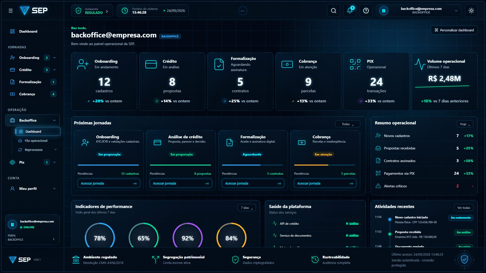
Telas de apresentação diagramadas para monitor panorâmico
Numa tela ultrawide, alargar os cartões deixava textos de uma linha em caixas de 800px. As páginas de apresentação foram diagramadas: viram zonas lado a lado, cabem inteiras na tela sem rolagem e mantêm os cartões na largura de leitura, entre 350 e 470px, com o espaço que sobra virando respiro.
| Medida no monitor ultrawide | Antes | Agora | Situação |
|---|---|---|---|
| Cartão de "Como funciona" a 3413px | 800 × 106 (uma linha) | 372 × 175 (três linhas) | Corrigido |
| Indicador da página inicial a 3413px | 660px de largura | 350px de largura | Corrigido |
| Cartão a 2560px (zoom 100%) | 592 × 103 | 466 × 123 | Corrigido |
| Quadro do site institucional | Parava em 1510px, com até 520px vazios de cada lado | Ocupa a tela, com conteúdo diagramado | Corrigido |
| Rolagem vertical nas 9 públicas | Presente em telas grandes | Nenhuma a 2560×945, 3413×1260 e 2560×1313 | Corrigido |
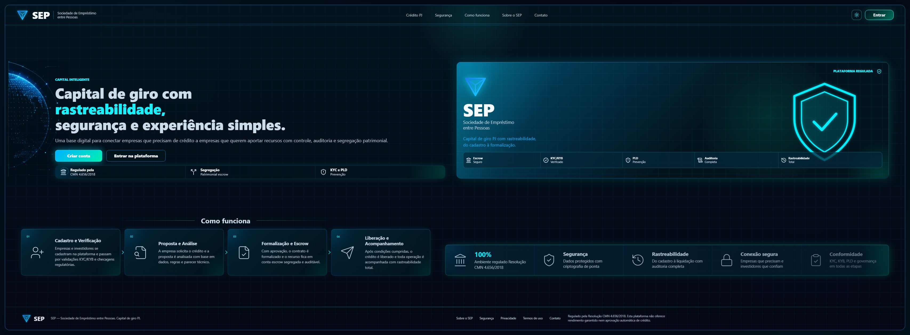
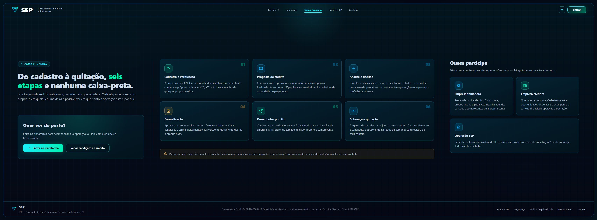
Auditoria de navegação: todo link leva a algum lugar
- 803 links e botões em 84 templates, classificados pelo que fazem de fato.
- 419 pontos de navegação separados das ações locais (salvar, filtrar, exportar).
- 119 rotas de menus e atalhos e 54 navegações do código: todas válidas.
- Critério refinado durante a revisão: link que aponta para a própria tela também conta como inativo.
- Cartões de Minhas propostas: filtram a tabela pelo status e mostram números reais.
- Pesquisa do cabeçalho: a lupa, antes decorativa, encontra qualquer tela do menu.
- Âncoras sem destino: KYC, KYB, certificações e auditoria completa do contrato.
- Suporte: "chat", "chamado" e "Esqueceu sua senha?" levam ao contato com o assunto marcado.
| Onde | Problema encontrado | Correção | Situação |
|---|---|---|---|
| Crédito · Minhas propostas | Os 4 botões dos cartões recarregavam a própria tela; os números eram fixos ("3 aprovadas", havia 1) | Filtram por status; "Ver detalhes do limite" abre o teto do regimento; números calculados das propostas | Corrigido |
| Cabeçalho de todas as telas | Lupa de pesquisa e cartão "Ambiente Regulado" sem ação | Pesquisa de telas por papel; cartão abre a página de segurança | Corrigido |
| Backoffice · Dashboard | Cópia antiga do menu, com pesquisa, alertas e ajuda inativos | Passou a usar o shell padrão; "Ver todas" abre a fila operacional | Corrigido |
| Breadcrumb "Início" | Três destinos diferentes em 22 telas; no perfil, recarregava a aplicação | Todos levam ao Dashboard, sem recarregar | Corrigido |
| Pix · Recebimentos | "Ver todas" das últimas consultas apontava para a mesma tela | Abre o histórico da sessão; cada item refaz a consulta | Corrigido |
| Formalização · Contrato | "Ver auditoria completa" sem destino | Expande hash SHA-256, versão, aceite, IP e navegador reais | Corrigido |
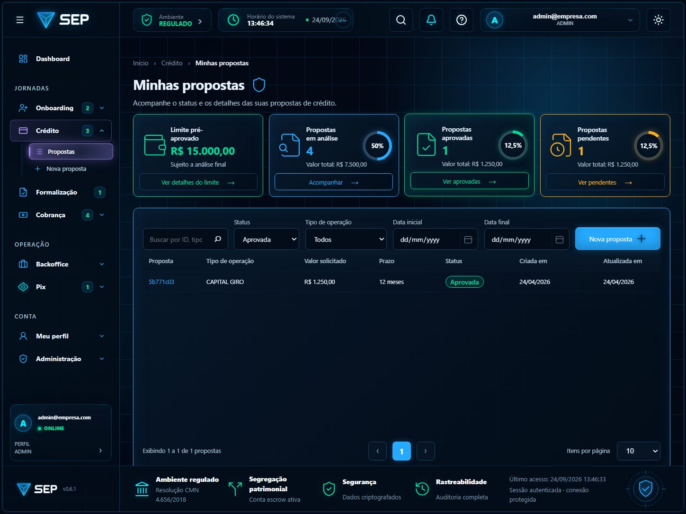
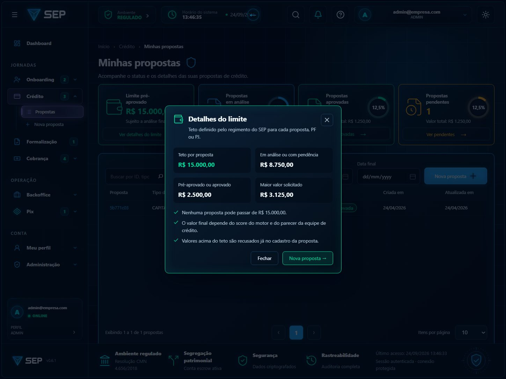
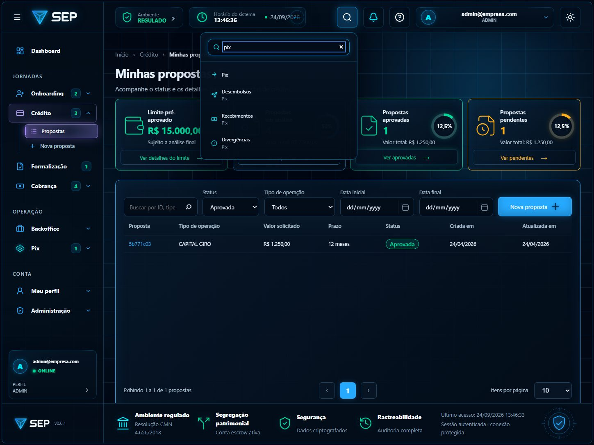
Nova tela: cadastro de usuários
O backend cria toda conta como CLIENTE, e atribuir outros papéis é uma operação sensível, que exige confirmação por TOTP. A tela respeita essa regra em vez de contorná-la:
- Dados de acesso: e-mail de login e senha inicial, com os quatro critérios da política verificados enquanto se digita.
- Papéis: escolhidos em chips, com o alcance de cada um visível antes de marcar.
- Criação: a conta nasce como CLIENTE e o sistema abre o detalhe do usuário.
- Confirmação: o detalhe pede o TOTP e aplica os papéis escolhidos, sozinho.
- Conta criada, papéis confirmados por TOTP e usuário presente na lista.
- A conta nova entra no sistema com a senha definida, já com o papel escolhido.
- E-mail duplicado é recusado com mensagem clara, sem sair da tela.
- 7 testes automatizados novos cobrem validação, criação e conflito.
- O atalho "Novo usuário" da home da Administração, antes inerte, também leva à tela.
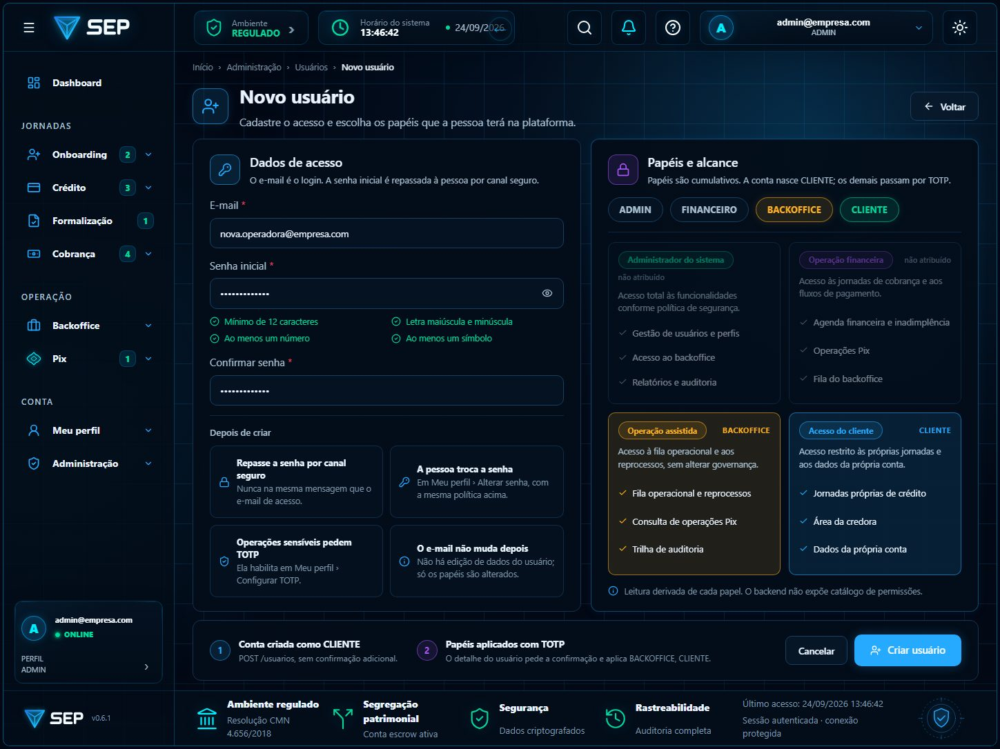
Tour assistido: o sistema se demonstra na própria tela
Um cursor percorre o sistema a partir do Dashboard: navega pelo menu, clica e digita letra por letra. O campo em uso acende com um glow e o resto da tela escurece; entre um ponto e outro, a tela volta à luminosidade real. Um cartão explica cada passo, com narração em português e música de fundo que abaixa sozinha quando a voz fala.
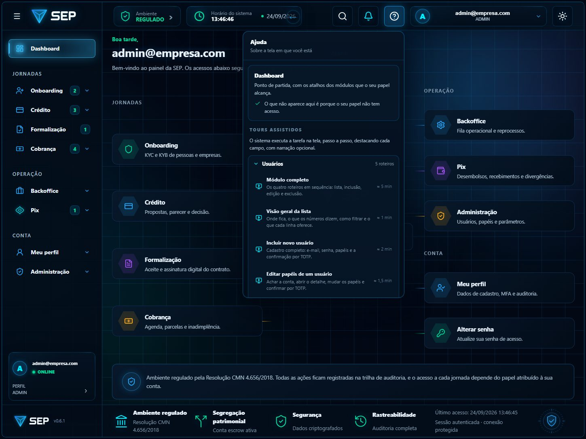
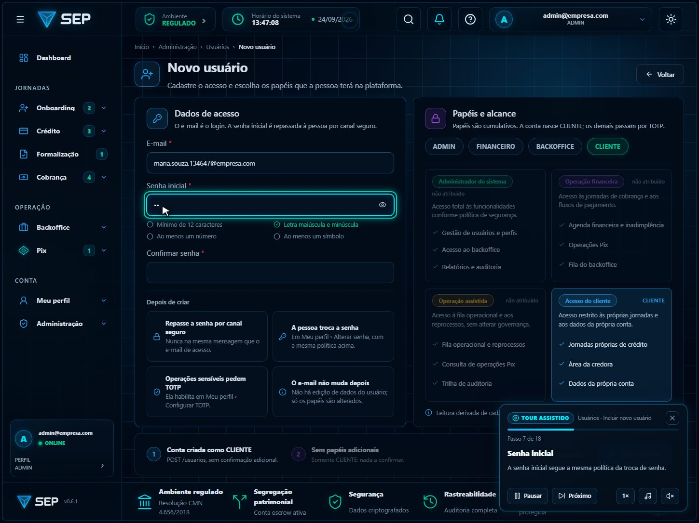
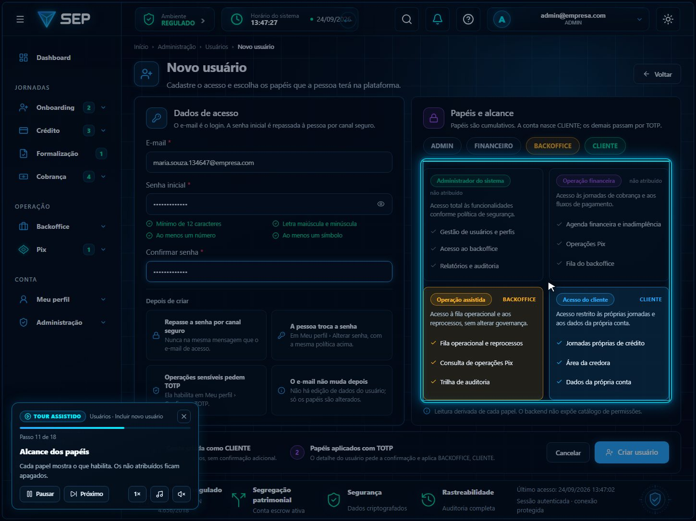
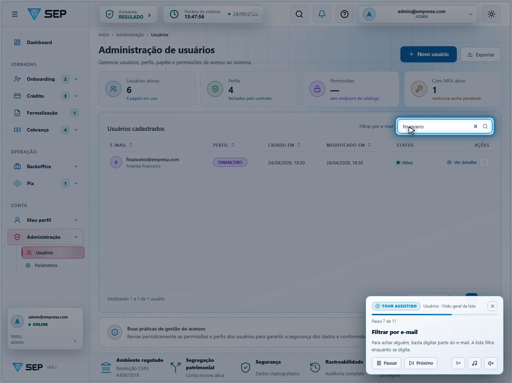
Roteiros do piloto, áudio e o que foi medido
| Roteiro | O que demonstra | Duração (1×) | Situação |
|---|---|---|---|
| Módulo completo | Os quatro roteiros abaixo em sequência, em 50 passos | ≈ 5 min | Verificado |
| Visão geral da lista | Menu, indicadores, tabela, filtro por e-mail e "Ver detalhe" | ≈ 1 min | Verificado |
| Incluir novo usuário | E-mail, senha, papel, criação e confirmação por TOTP | ≈ 2 min | Verificado |
| Editar papéis | Localizar a conta, alterar o papel, salvar e confirmar por TOTP | ≈ 1,5 min | Verificado |
| Excluir ou suspender | Onde ficam essas ações, por que estão bloqueadas e o que fazer hoje | ≈ 1 min | Verificado |
- Narração em português pela voz do próprio sistema operacional, sem serviço externo; o texto aparece sempre no cartão.
- Música de fundo: jazz instrumental ao piano, gerado no navegador, sem faixa de terceiros nem licença.
- Volume que respeita a voz: cerca de −31 dBFS sem fala e −38 dBFS enquanto a narração fala; volta devagar quando a fala termina.
- Cartão sem cobrir o foco em 49 dos 50 passos; a exceção é a tabela inteira em destaque, que ocupa quase toda a tela.
- Escurecimento só no alvo: em cada passo o fundo começa claro e escurece ao chegar no foco.
- 6 testes automatizados do motor do tour, incluindo o bloqueio por papel e por TOTP.
O que depende do backend e o que vem a seguir
| Item na tela | Por que está desabilitado | Depende de |
|---|---|---|
| Editar usuário · Suspender | Não há endpoint de edição de dados nem de suspensão | Backend |
| Excluir usuário (Mais ações) | Não há endpoint de exclusão, desativação ou reenvio de convite | Backend |
| Histórico completo do usuário e do parâmetro | Não há endpoint de histórico de atividades | Backend |
| Mais dados do recebedor · Histórico do desembolso | A API do desembolso não expõe esses dados | Backend |
| Negociar em lote (inadimplência) | Renegociação em lote não é exposta nesta fase | Backend |
| Personalizar dashboard | Não há preferência de layout salva no servidor | Backend |
Resumo da semana & homologação
ATUALIZAÇÃO DO FRONTEND SEP — 22 A 24/09/2026 — CONCLUÍDA
Telas preparadas para monitores grandes e ultrawide, navegação auditada e corrigida, cadastro de usuários entregue e demonstração guiada do sistema em funcionamento. Tudo construído sobre a base de segurança homologada em 18/09, sem alterar o que já estava aprovado.
- Testes automatizados: 96 arquivos e 687 testes, 100% aprovados.
- Qualidade de código: ESLint limpo nos arquivos alterados; nenhum erro novo de estilo.
- Sem regressão visual: pixels idênticos a 1280 e 1440 nas telas redimensionadas.
- Navegação: nenhuma rota quebrada entre 119 rotas de menu e 54 navegações do código.
- Identidade preservada: layouts, cores e fluxos homologados mantidos.
- Honestidade funcional: o que depende do backend aparece bloqueado com o motivo, nunca simulado.
- Demonstração segura: o tour não grava dados fora do ambiente de demonstração.